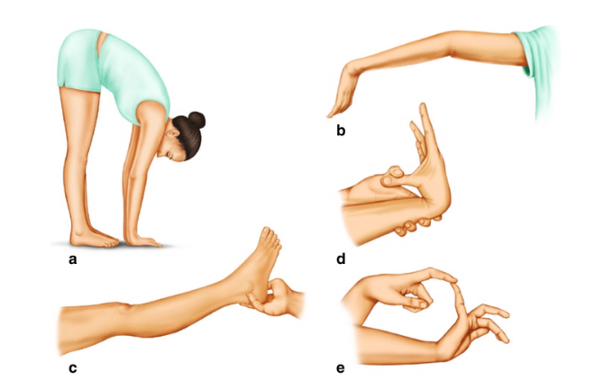
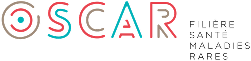
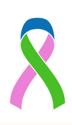

Vous informer. Vous soutenir. Vous représenter.
Qui sommes-nous ?
Nos objectifs
Améliorer le parcours de soin
Améliorer le parcours de soin des personnes atteintes du SED.
Sensibiliser
Sensibiliser les professionnels de santé au diagnostic et à la prise en charge.
Informer
Informer patients et proches sur le syndrome et les ressources disponibles.
Représenter
Représenter les patients auprès des institutions médicales et sociales.
L'équipe
Le bureau est composé de membres qui vivent eux-mêmes avec le Syndrome d'Ehlers-Danlos.
Une association récente, avec de l'expérience depuis 2018 dans l'accompagnement et le parcours de soin.
Rejoignez-nous
Rencontrez-nous !
Participez à nos cafés parole au CHU de Toulouse et dans d'autres lieux en Occitanie. Retrouvez-nous aussi en visioconférence ou lors de nos événements associatifs tout au long de l'année.
Les symptômes du SED
Le SED regroupe 13 formes différentes d'anomalies du tissu conjonctif (collagène). La forme hypermobile (SEDh) est la plus fréquente.
C'est une maladie rare, génétique, encore méconnue et sous-diagnostiquée. Prévalence : 1 personne sur 2000 à 5000.
Découverte récente de certains gènes impliqués dans le SED hypermobile ; ils sont déjà connus pour les autres formes du SED.
Qui est concerné ?
98% des personnes vues en consultation sont des femmes, probablement en lien avec le rôle aggravant des œstrogènes.
Source : CHUV, Suisse
Score de Beighton
Le test de référence pour évaluer l'hyperlaxité articulaire.

Quels symptômes sont les plus fréquents ?
Hypermobilité articulaire
Entorses, luxations, subluxations à répétition.
Douleurs & fatigue chroniques
(au moins trois mois consécutifs)
Articulations, dos, muscles, abdomen, céphalées. Fatigue intense, souvent dès le réveil.
Troubles de la proprioception
Perception du corps dans l'espace erronée, vertiges, troubles de la vision.
Peau fragile
Peau fine et extensible, cicatrisation difficile, hématomes et tendance aux saignements.
Autres dysfonctionnements
Troubles digestifs et urinaires, dysfonctionnements du système nerveux.
La filière Oscar

À retrouver sur www.filiere-oscar.fr — Comment la filière Oscar peut vous aider :
Réseau national
Centres experts coordonnés dans toute la France.
Diagnostic & soins
Concertations pluridisciplinaires et guides de référence.
Un centre près de chez vous
Annuaire des centres sur filiere-oscar.fr.
Recherche & formation
Appels à projets, événements, newsletter scientifique.
Nous suivre & nous contacter
Sed'Occ France — @sed_occ31 — www.sedocc.fr
Contactez-nous :
- sedocc31@gmail.com (Haute-Garonne)
- sedocc66@gmail.com (Pyrénées-Orientales)
- sedocc09@gmail.com (Ariège)

Association loi 1901 — SIRET : 943 891 861 00016 — Siège social : Portet-sur-Garonne